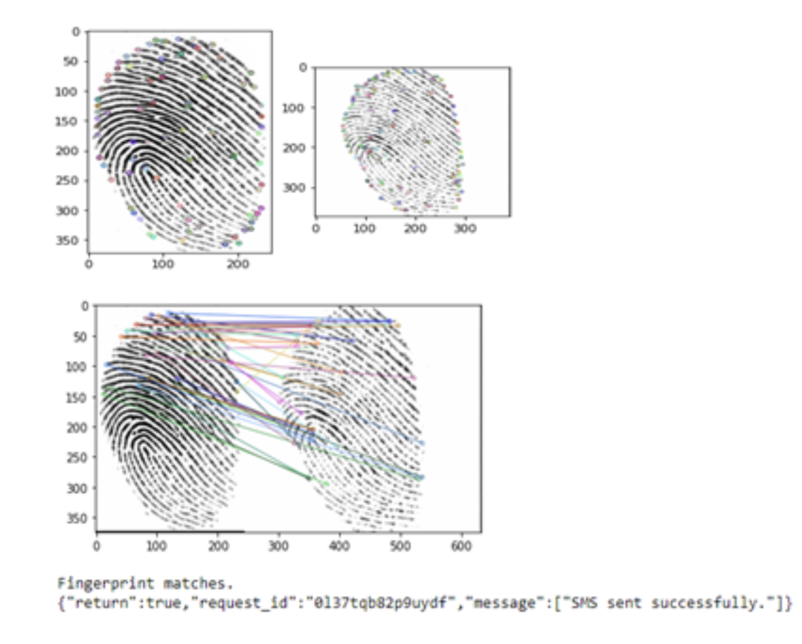

This project is a biometric fingerprint recognition system developed using image processing techniques, Gabor filtering, Hamming distance-based minutiae matching, and GSM-based communication for voting confirmation. It includes a user manual for installation, launch, and operation.
Project Summary
The Smart Voting System demonstrates secure biometric authentication and reliable voting transaction processing, supported by signal processing and data validation methods.
User Manual
The attached document contains step-by-step instructions for installing and using the Smart Voting System.
Tech Stack
Python, OpenCV, GSM Module, Image Processing, Biometrics

System dashboard showing vote processing and status updates.
Detailed biometric data analysis and identification results.